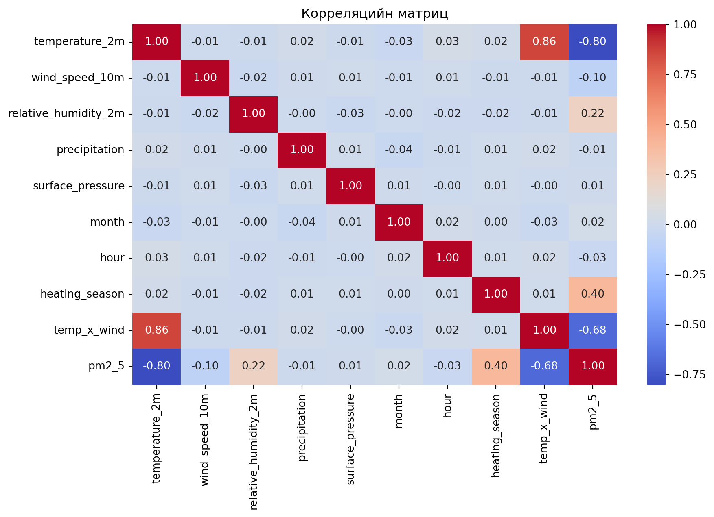
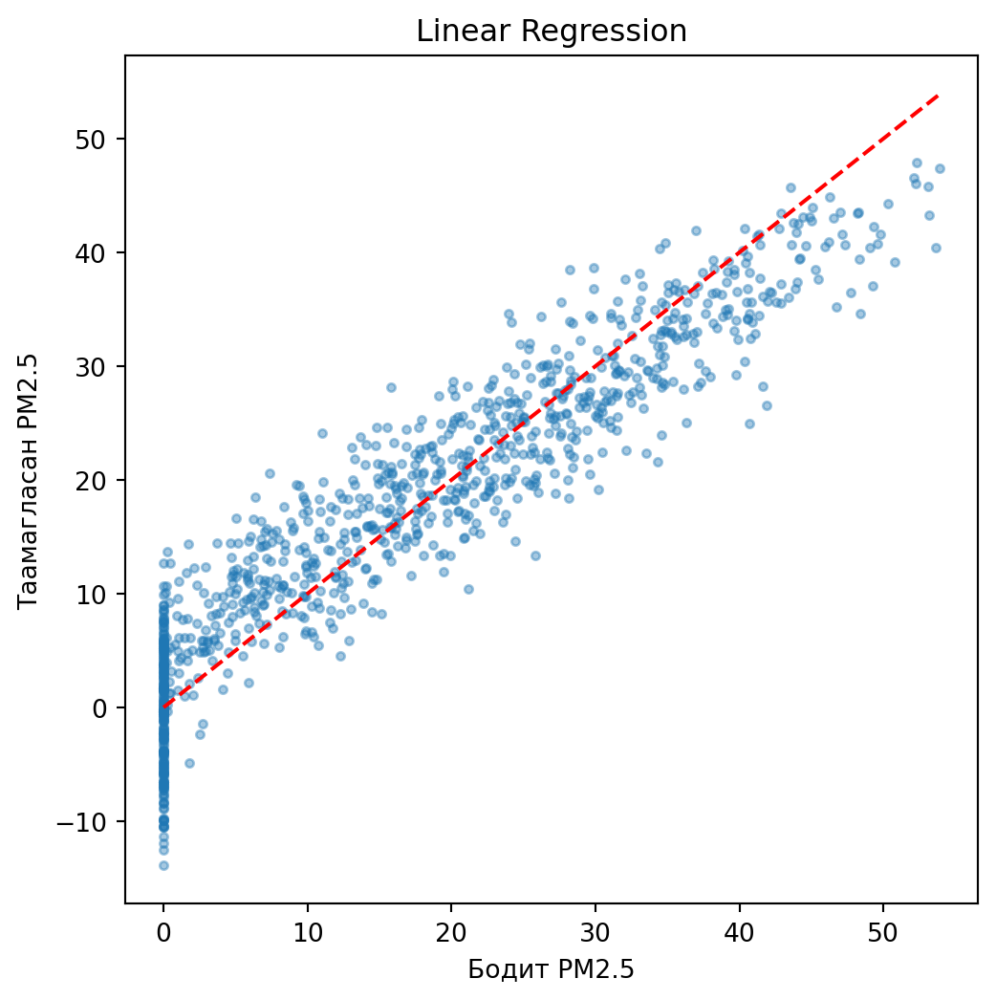
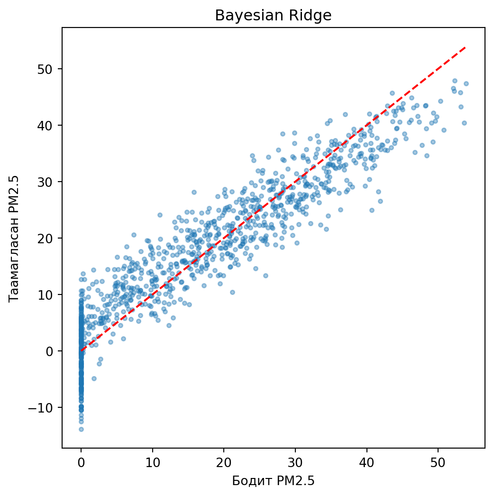
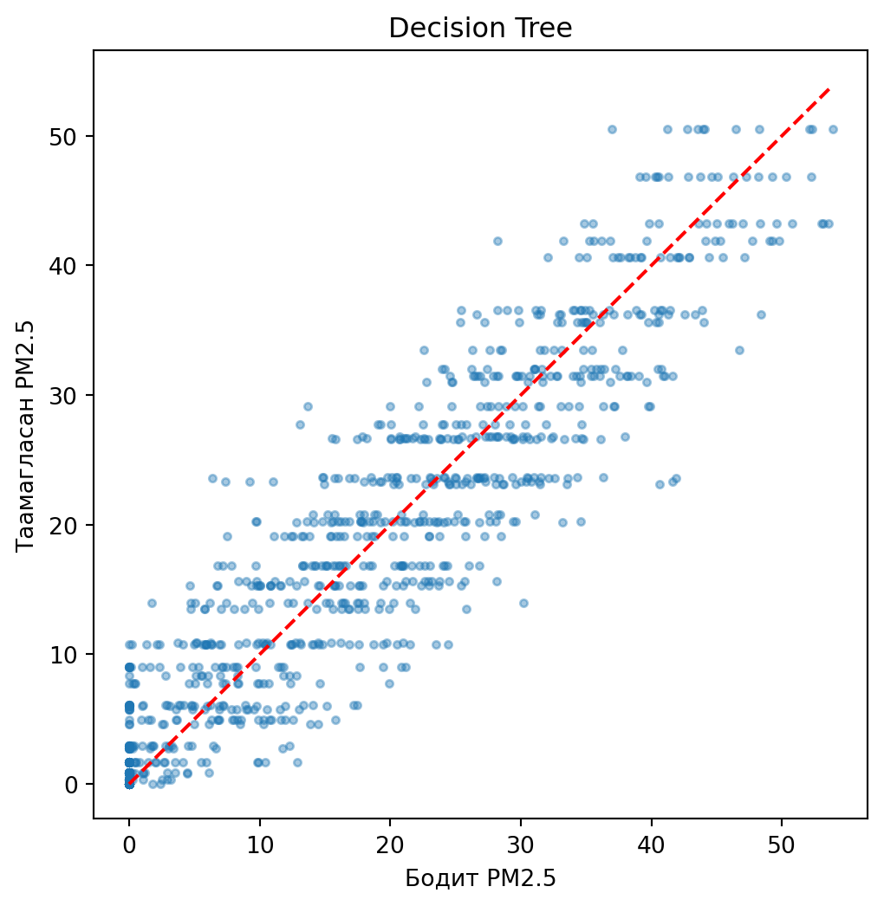
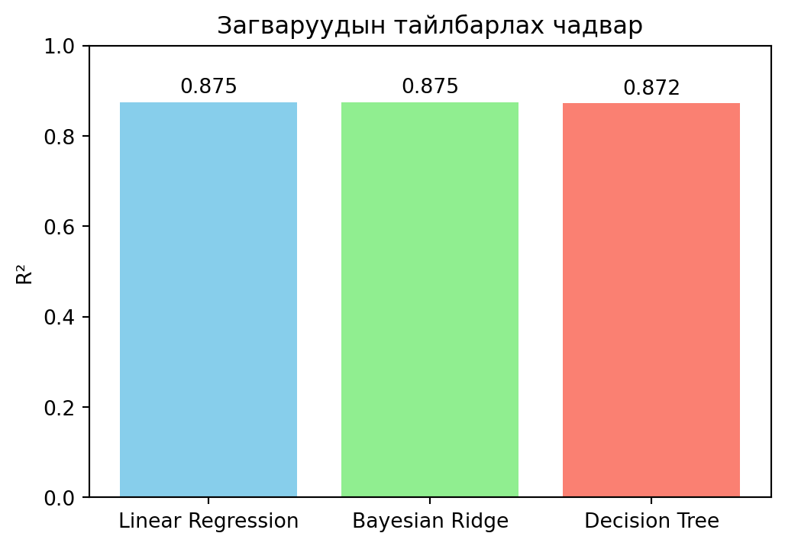
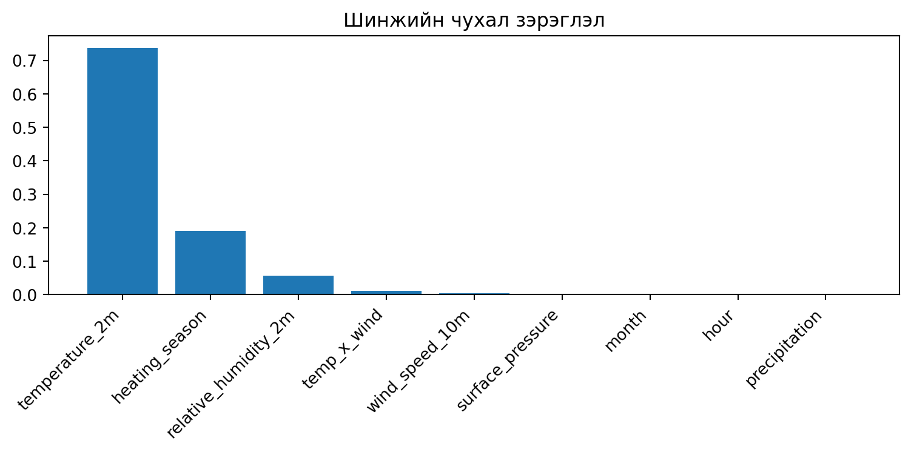
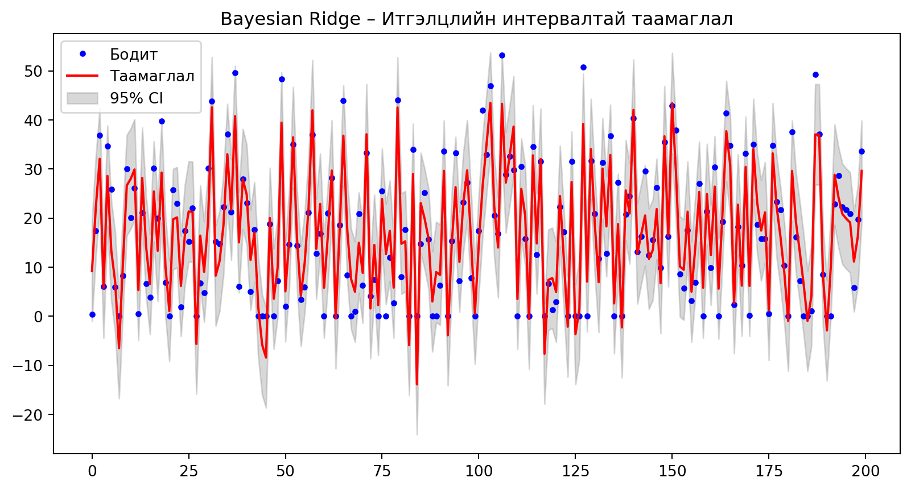

flowchart LR
A[Weather API] --> C(Цаг, огноогоор нэгтгэх)
B[Air Quality API] --> C
C --> D[Нэг хүснэгт: цаг агаар + PM2.5]
title: “Улаанбаатар хотын PM2.5 агаарын бохирдлын таамаглал” subtitle: “Цаг агаарын өгөгдлөөр PM2.5-ийг таамаглах машин сургалтын загвар” author: - “Д. Аахангай” - “Б. Өсөхбаяр” - “А. Баясгалан” date: “2026” format: revealjs: theme: simple transition: slide code-fold: false footer: “PM2.5 таамаглал · Магадлал Статистикийн Төсөл” chalkboard: true editor: source —
Яагаад PM2.5-ийг цаг агаарын өгөгдлөөр таамаглах ёстой вэ?
Судалгааны асуулт: “Цаг агаарын өгөгдлөөр PM2.5-ийг таамаглаж болох уу?”
Хүлэгдэж буй үр өгөөж:
Эрүүл мэндийн анхааруулга · Богино хугацааны таамаглал · Бодлого боловсруулагчдад нотолгоо
“Таны хүүхэд гадаа тоглох гэж байна уу? Агаар цэвэр байна уу гэдгийг урьдчилан мэдэж болдог бол ямар вэ?“
| Түвшин | Утга | Тайлбар |
|---|---|---|
| Цэвэр | 0–15 | ДЭМБ-ын 2021 оны зөвлөмж |
| Дунд зэрэг | 15–25 | MNS 4585 стандарт давах эхлэл |
| Эмзэг бүлэгт хортой | 25–55 | Хүүхэд, өндөр настанд эрсдэлтэй |
| Эрүүл мэндэд хортой | 55–150 | Бүх хүн амд сөрөг нөлөөтэй |
| Маш их бохирдолтой | 150–250 | Гадаа удаан байх нь зохисгүй |
| Аюултай | 250+ | Онцгой байдлын түвшин |
Байршил: Улаанбаатар (47.92°N, 106.91°E)
Хугацаа: 2019-01-01 – 2024-12-31
Нарийвчлал: Цагийн өгөгдөл
flowchart LR
A[Weather API] --> C(Цаг, огноогоор нэгтгэх)
B[Air Quality API] --> C
C --> D[Нэг хүснэгт: цаг агаар + PM2.5]
Цаг бүрийн цаг агаарын үзүүлэлт PM2.5-ийн утгатай нэг мөрөнд нэгтгэгдэнэ.
Үр дүн: 43,824 мөрөөс 12,768 (29.1%) хасагдан 31,056 цэвэр мөр үлдсэн.
| Шинж | Нэгж | Тайлбар |
|---|---|---|
| temperature_2m | °C | Агаарын температур |
| wind_speed_10m | km/h | Салхины хурд |
| relative_humidity_2m | % | Харьцангуй чийгшил |
| precipitation | mm | Хур тунадасны хэмжээ |
| surface_pressure | hPa | Гадаргын даралт |
| month | 1–12 | Улирлын хэв маяг |
| hour | 0–23 | Өдрийн циклийн хэв маяг |
| heating_season | 0/1 | Түлш түлдэг үе (10–4 сар) |
| temp_x_wind | °C·km/h | Температур × салхины харилцан үйлчлэл |

Бүх загварыг ижил сургалт/шалгалт хуваалт дээр сургаж, ижил үнэлгээний үзүүлэлтүүдээр харьцуулав.
Linear Regression R²: 0.875
MAE: 4.12
RMSE: 5.08R² SCORE: 0.517 (жишээ)
Bayesian Ridge R²: 0.875Decision Tree R²: 0.872
MAE: 3.89
RMSE: 5.15flowchart LR
A[Өгөгдөл] --> B[Цэвэрлэх + train/test split]
B --> C[Стандартчлал \(зөвхөн шугаман загварт)]
C --> D[Загвар сургах]
D --> E[Таамаглах]
E --> F[Үнэлэх: MAE, RMSE, R²]
| Загвар | MAE | RMSE | R² |
|---|---|---|---|
| Linear Regression | ~8–10 | ~11–13 | 0.517 |
| Bayesian Ridge | ~8–10 | ~11–13 | 0.517 |
| Decision Tree | Хамгийн бага | Хамгийн бага | 0.535 |
Decision Tree бүх үнэлгээний үзүүлэлтээр хамгийн сайн.




Decision Tree PM2.5-ийн өөрчлөлтийн 53.5%-ийг цаг агаарын өгөгдлөөр тайлбарласан.

Хамгийн чухал шинжүүд:
1. temperature_2m – 53.4%
2. wind_speed_10m – 18.9%
3. temp_x_wind – 11.2%

➡ Цаг агаарын урьдчилсан мэдээг ашиглан агаарын чанарын богино хугацааны анхааруулга хийх боломжтой.
Д. Аахангай – Тайлан, танилцуулга
Б. Өсөхбаяр – Өгөгдөл бэлтгэх, ерөнхий загвар
А. Баясгалан – Python дээр загвар сургах
Асуулт байна уу?
PM2.5 таамаглал · Магадлал Статистикийн Төсөл · 2026
---
## **How to make it work** (Хэрхэн ажиллуулах)
### 1. Шаардлагатай програм хангамж суулгах
- **Quarto** – [https://quarto.org/docs/get-started/](https://quarto.org/docs/get-started/)
- **Python** 3.8+ (Jupyter эсвэл зүгээр л Python environment)
- Дараах Python сангууд:
```bash
pip install pandas numpy matplotlib seaborn scikit-learn